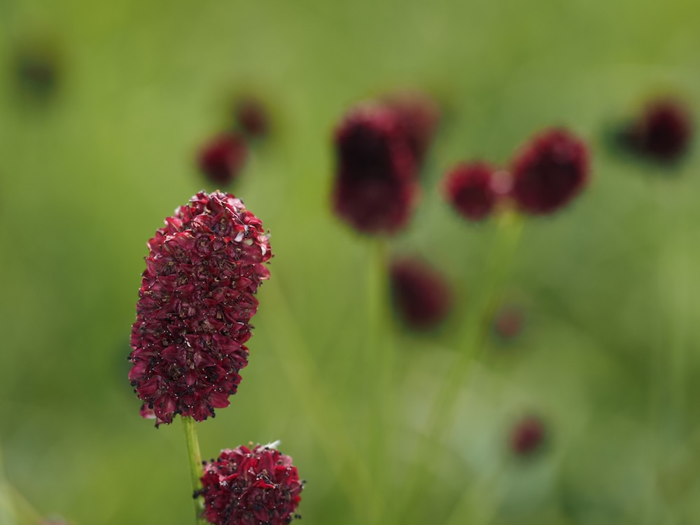
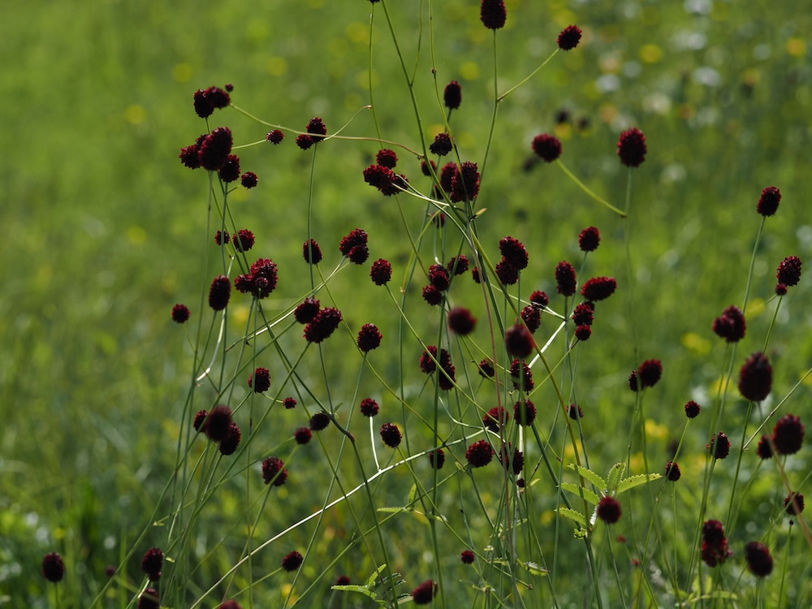

Dunkelrote Murmeln über grasiger Wiese — die Lieblingspflanze des Ameisenbläulings.



Eine Schicksalspflanze für Schmetterlinge
Der Große Wiesenknopf ist die einzige Eiablagepflanze für mehrere stark gefährdete Schmetterlinge — den Hellen und Dunklen Wiesenknopf-Ameisenbläuling. Die Falterraupen leben zunächst in den Blütenköpfchen, lassen sich dann aber von Knotenameisen in deren Nester tragen, wo sie auf Kosten der Ameisenbrut weiterwachsen. Ohne Wiesenknopf — keine Bläulinge.
Sanguisorba — die Blutstillerin
Der Gattungsname kommt vom lateinischen „sanguis" (Blut) und „sorbere" (aufsaugen). Schon in der Antike galten die Wurzeln als wundheilend und blutstillend, daher der Name. Auch heute wird Sanguisorba in der Naturheilkunde noch verwendet, vor allem bei Hautblutungen und Durchfall.
Wissenswertes & Merksätze
Erkennungszeichen
Schlanker, oft rötlicher Stängel bis 1 m. Blätter gefiedert, mit kleinen, fein gesägten Fiederblättchen. Blütenköpfchen kompakt-eiförmig, 1–3 cm, dunkelrot bis purpur.
Schutz von Mahd-Wiesen
Wo der Große Wiesenknopf wächst, dürfen Wiesen NICHT zwischen Mai und Mitte August gemäht werden — sonst gehen die Schmetterlinge verloren. In Naturschutzgebieten gelten dafür spezielle Mahdregimes.